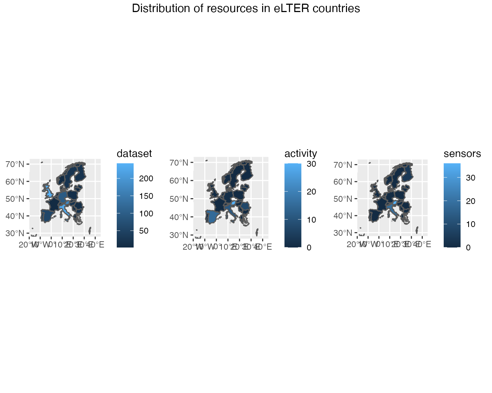

Related resources delivered by EU eLTER sites
Alessandro Oggioni, Paolo Tagliolato
Source:vignettes/resources_delivered_eu_networks.Rmd
resources_delivered_eu_networks.Rmd
eLTER_eu_networks <- readr::read_csv("./data/eLTER_eu_networks.csv", show_col_types = FALSE) %>%
tibble::as_tibble()
related_resources <- purrr::map_dfr(
as.list(
eLTER_eu_networks$DEIMS.iD
),
function (x) {
ReLTER::get_network_related_resources(x) %>%
dplyr::filter(!is.na(uri)) %>%
dplyr::mutate(
networkID = x,
type = stringr::str_replace(uri, "https://deims.org/(.*)/.*","\\1")
)
}
) %>%
dplyr::inner_join(eLTER_eu_networks, by = c("networkID" = "DEIMS.iD")) %>%
dplyr::select(
title = relatedResourcesTitle,
uri,
lastChanged = relatedResourcesChanged,
networkID,
type,
network = eLTER_EU_Networks,
country
)
library(dplyr)
tbl_resources <- related_resources %>%
dplyr::count(country, type) %>%
tidyr::pivot_wider(names_from = type, values_from = n, values_fill = 0)
knitr::kable(
tbl_resources,
caption = "eLTER EU networks related resources"
)| country | activity | dataset | sensors |
|---|---|---|---|
| Austria | 36 | 172 | 36 |
| Belgium | 1 | 7 | 0 |
| Bulgaria | 0 | 17 | 0 |
| Denmark | 0 | 2 | 0 |
| Finland | 0 | 18 | 4 |
| France | 0 | 2 | 0 |
| Germany | 1 | 95 | 0 |
| Greece | 0 | 3 | 0 |
| Hungary | 0 | 19 | 0 |
| Israel | 0 | 18 | 0 |
| Italy | 11 | 223 | 20 |
| Latvia | 0 | 14 | 0 |
| Lithuania | 0 | 2 | 0 |
| Netherlands | 0 | 2 | 0 |
| Norway | 0 | 2 | 0 |
| Poland | 0 | 11 | 0 |
| Portugal | 0 | 44 | 0 |
| Romania | 7 | 8 | 0 |
| Serbia | 0 | 4 | 0 |
| Slovakia | 0 | 6 | 0 |
| Slovenia | 0 | 3 | 0 |
| Spain | 15 | 56 | 0 |
| Sweden | 0 | 21 | 0 |
| Switzerland | 0 | 18 | 0 |
| United Kingdom | 0 | 243 | 0 |
# Get the world map
worldMap <- rworldmap::getMap()
library(rnaturalearth)
world_map <- rnaturalearth::ne_countries(scale = 50, returnclass = 'sf')
europe_map <- world_map %>%
filter(name %in% related_resources$country)
elter_map <- europe_map %>%
dplyr::select(
name,
geometry
) %>%
dplyr::left_join(tbl_resources, by = c("name" = "country"))
map_datasets <- ggplot2::ggplot() +
ggplot2::geom_sf(data = elter_map, ggplot2::aes(fill = dataset)) +
ggplot2::coord_sf(xlim = c(-20, 45), ylim = c(28, 73), expand = FALSE)
map_activities <- ggplot2::ggplot() +
ggplot2::geom_sf(data = elter_map, ggplot2::aes(fill = activity)) +
ggplot2::coord_sf(xlim = c(-20, 45), ylim = c(28, 73), expand = FALSE)
map_sensors <- ggplot2::ggplot() +
ggplot2::geom_sf(data = elter_map, ggplot2::aes(fill = sensors)) +
ggplot2::coord_sf(xlim = c(-20, 45), ylim = c(28, 73), expand = FALSE)
gridExtra::grid.arrange(
map_datasets,
map_activities,
map_sensors,
nrow = 1,
top = "Distribution of resources in eLTER countries"#,
# bottom = grid::textGrob(
# "this footnote is right-justified",
# gp = grid::gpar(fontface = 3, fontsize = 9),
# hjust = 1,
# x = 1
# )
)
dataset_uploaded <- related_resources %>%
dplyr::arrange(lastChanged) %>%
dplyr::mutate(
lastChanged = as.Date(
lastChanged
),
value = 1
) %>%
tidyr::complete(
lastChanged = tidyr::full_seq(
as.Date(lastChanged),
period = 1
),
fill = list(value = 0)
) %>%
dplyr::group_by(lastChanged) %>%
dplyr::summarise(frequency = n()) %>%
dplyr::mutate(
cumsum = cumsum(frequency)
)
fig <-
ggplot2::ggplot(dataset_uploaded, ggplot2::aes(x = lastChanged, y = cumsum)) +
ggplot2::geom_line(color = "#00AFBB", size = 1) +
ggplot2::scale_x_date(date_labels = "%b-%Y") +
ggplot2::theme_minimal()
fig